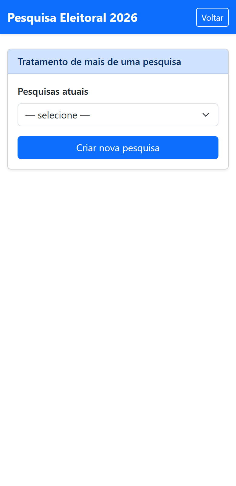

Parte 3 — Modo de operação
13. Mais de uma pesquisa
Você pode conduzir várias pesquisas ao mesmo tempo — por exemplo, uma por Estado. Cada pesquisa tem seu próprio rótulo, UF, saldo, segmentos e entrevistadores.
13.1 Onde gerenciar
Há dois caminhos:
- na tela de boas-vindas, o menu Gerenciar mais de uma pesquisa abre a tela Tratamento de mais de uma pesquisa;
- dentro do painel de gestão, os itens Gerenciar outra pesquisa e Criar nova pesquisa.

13.2 Criar, alternar e renomear
- Criar nova pesquisa — informe o rótulo e a UF. Ao concluir, o aplicativo pergunta se você quer passar a gerenciar a nova pesquisa agora.
- Gerenciar pesquisa selecionada — escolha uma pesquisa na lista Pesquisas atuais e abra o painel de gestão dela.
- Editar rótulo da pesquisa — renomeia a pesquisa selecionada.